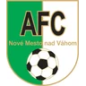

Tabuľky
Sezóna 2026/27. Poradie podľa Sportnetu, náš tím je zvýraznený.
A-mužstvo
Stránka tímuIV. liga
| # | Tím | Z | V | R | P | Skóre | B |
|---|---|---|---|---|---|---|---|
| 1 | 15 | 11 | 2 | 2 | 37:11 | 35 | |
| 2 | 15 | 9 | 5 | 1 | 37:15 | 32 | |
| 3 | 15 | 9 | 3 | 3 | 21:11 | 30 | |
| 4 | 15 | 8 | 2 | 5 | 32:28 | 26 | |
| 5 | 15 | 7 | 4 | 4 | 29:19 | 25 | |
| 6 | 15 | 6 | 5 | 4 | 22:16 | 23 | |
| 7 | 15 | 6 | 4 | 5 | 26:24 | 22 | |
| 8 | 15 | 7 | 0 | 8 | 23:20 | 21 | |
| 9 | 15 | 5 | 5 | 5 | 23:24 | 20 | |
| 10 | 15 | 6 | 1 | 8 | 26:28 | 19 | |
| 11 |  AFC Nové Mesto nad Váhom | 15 | 5 | 4 | 6 | 22:19 | 19 |
| 12 | FC Topoľčany | 15 | 5 | 3 | 7 | 19:26 | 18 |
| 13 | 15 | 5 | 2 | 8 | 19:25 | 17 | |
| 14 | 15 | 3 | 3 | 9 | 12:29 | 12 | |
| 15 | FK Junior Kanianka | 15 | 2 | 3 | 10 | 18:45 | 9 |
| 16 | 15 | 3 | 0 | 12 | 20:46 | 9 |
U19 Starší dorast
Stránka tímuIII. liga U19 ZsFZ
| # | Tím | Z | V | R | P | Skóre | B |
|---|---|---|---|---|---|---|---|
| 1 | 15 | 12 | 3 | 0 | 56:14 | 39 | |
| 2 | 15 | 11 | 2 | 2 | 61:17 | 35 | |
| 3 | 15 | 11 | 1 | 3 | 35:14 | 34 | |
| 4 | 15 | 10 | 3 | 2 | 44:18 | 33 | |
| 5 | FC Topoľčany | 15 | 9 | 1 | 5 | 44:21 | 28 |
| 6 | 15 | 8 | 0 | 7 | 32:27 | 24 | |
| 7 | 15 | 7 | 3 | 5 | 32:23 | 24 | |
| 8 | AFC Nové Mesto nad Váhom | 15 | 7 | 0 | 8 | 45:33 | 21 |
| 9 | Spartak Myjava | 15 | 6 | 1 | 8 | 30:36 | 19 |
| 10 | 15 | 6 | 1 | 8 | 38:33 | 19 | |
| 11 | 15 | 5 | 2 | 8 | 21:33 | 17 | |
| 12 | 15 | 5 | 2 | 8 | 30:44 | 17 | |
| 13 | 15 | 4 | 4 | 7 | 33:29 | 16 | |
| 14 | 15 | 3 | 4 | 8 | 25:28 | 13 | |
| 15 | 15 | 1 | 3 | 11 | 23:61 | 6 | |
| 16 | 15 | 0 | 0 | 15 | 7:125 | 0 |
U17 Mladší dorast
Stránka tímuIII. liga U17 ZsFZ
| # | Tím | Z | V | R | P | Skóre | B |
|---|---|---|---|---|---|---|---|
| 1 | 15 | 14 | 1 | 0 | 62:9 | 43 | |
| 2 | 15 | 13 | 0 | 2 | 80:8 | 39 | |
| 3 | 15 | 11 | 0 | 4 | 51:19 | 33 | |
| 4 | 15 | 9 | 2 | 4 | 39:24 | 29 | |
| 5 | 15 | 9 | 1 | 5 | 49:27 | 28 | |
| 6 | 15 | 8 | 3 | 4 | 34:20 | 27 | |
| 7 | 15 | 8 | 2 | 5 | 44:39 | 26 | |
| 8 | 15 | 6 | 2 | 7 | 30:32 | 20 | |
| 9 | 15 | 6 | 2 | 7 | 37:40 | 20 | |
| 10 | Spartak Myjava | 15 | 5 | 2 | 8 | 20:31 | 17 |
| 11 | 15 | 5 | 2 | 8 | 22:34 | 17 | |
| 12 | AFC Nové Mesto nad Váhom | 15 | 5 | 0 | 10 | 28:44 | 15 |
| 13 | FC Topoľčany | 15 | 4 | 2 | 9 | 27:36 | 14 |
| 14 | 15 | 3 | 3 | 9 | 36:57 | 12 | |
| 15 | 15 | 2 | 2 | 11 | 14:82 | 8 | |
| 16 | 15 | 0 | 0 | 15 | 5:76 | 0 |
U15 Starší žiaci
Stránka tímuI. liga starších žiakov U15, Západ
| # | Tím | Z | V | R | P | Skóre | B |
|---|---|---|---|---|---|---|---|
| 1 | 14 | 13 | 1 | 0 | 98:3 | 40 | |
| 2 | FK DAC 1904 Dunajská Streda | 14 | 11 | 3 | 0 | 56:13 | 36 |
| 3 | FC Spartak Trnava | 15 | 10 | 3 | 2 | 54:12 | 33 |
| 4 | 15 | 10 | 2 | 3 | 50:20 | 32 | |
| 5 | 14 | 10 | 2 | 2 | 40:16 | 32 | |
| 6 | FC Petržalka | 14 | 10 | 0 | 4 | 49:23 | 30 |
| 7 | 15 | 8 | 0 | 7 | 38:47 | 24 | |
| 8 | 14 | 7 | 2 | 5 | 35:22 | 23 | |
| 9 | SDM Domino | 14 | 6 | 2 | 6 | 36:26 | 20 |
| 10 | 14 | 6 | 2 | 6 | 34:33 | 20 | |
| 11 | FKM Karlova Ves Bratislava | 14 | 6 | 1 | 7 | 34:46 | 19 |
| 12 | 15 | 6 | 1 | 8 | 28:39 | 19 | |
| 13 | FC ViOn Zlaté Moravce - Vráble | 15 | 5 | 2 | 8 | 26:41 | 17 |
| 14 | 14 | 4 | 3 | 7 | 24:28 | 15 | |
| 15 | 14 | 5 | 0 | 9 | 20:44 | 15 | |
| 16 | 14 | 4 | 2 | 8 | 23:47 | 14 | |
| 17 | 15 | 3 | 2 | 10 | 14:38 | 11 | |
| 18 | 14 | 3 | 2 | 9 | 14:43 | 11 | |
| 19 | 15 | 2 | 4 | 9 | 13:29 | 10 | |
| 20 | FC Topoľčany | 15 | 3 | 1 | 11 | 27:72 | 10 |
| 21 | 14 | 1 | 1 | 12 | 4:75 | 4 |
U14 Starší žiaci
Stránka tímuI. liga starších žiakov U14, Západ
| # | Tím | Z | V | R | P | Skóre | B |
|---|---|---|---|---|---|---|---|
| 1 | 14 | 13 | 0 | 1 | 73:20 | 39 | |
| 2 | FC Petržalka | 14 | 12 | 1 | 1 | 72:24 | 37 |
| 3 | 14 | 12 | 0 | 2 | 80:13 | 36 | |
| 4 | FC Spartak Trnava | 15 | 11 | 1 | 3 | 84:17 | 34 |
| 5 | 15 | 10 | 1 | 4 | 58:21 | 31 | |
| 6 | FKM Karlova Ves Bratislava | 14 | 9 | 2 | 3 | 48:20 | 29 |
| 7 | FC Topoľčany | 15 | 9 | 1 | 5 | 56:42 | 28 |
| 8 | 14 | 8 | 2 | 4 | 58:30 | 26 | |
| 9 | SDM Domino | 14 | 8 | 1 | 5 | 50:24 | 25 |
| 10 | FK DAC 1904 Dunajská Streda | 14 | 7 | 1 | 6 | 40:34 | 22 |
| 11 | 15 | 7 | 1 | 7 | 20:37 | 22 | |
| 12 | 14 | 6 | 2 | 6 | 45:31 | 20 | |
| 13 | 14 | 6 | 1 | 7 | 42:29 | 19 | |
| 14 | 14 | 6 | 0 | 8 | 43:46 | 18 | |
| 15 | 14 | 5 | 0 | 9 | 38:36 | 15 | |
| 16 | FC ViOn Zlaté Moravce - Vráble | 15 | 4 | 1 | 10 | 30:56 | 13 |
| 17 | 14 | 4 | 1 | 9 | 36:76 | 13 | |
| 18 | 15 | 3 | 1 | 11 | 29:88 | 10 | |
| 19 | 14 | 2 | 0 | 12 | 29:90 | 6 | |
| 20 | 15 | 0 | 1 | 14 | 9:118 | 1 | |
| 21 | 15 | 0 | 0 | 15 | 9:97 | 0 |
U13 A Mladší žiaci
Stránka tímuI. liga mladších žiakov U13, Západ
| # | Tím | Z | V | R | P | Skóre | B |
|---|---|---|---|---|---|---|---|
| 1 | FC Spartak Trnava | 14 | 12 | 2 | 0 | 82:16 | 38 |
| 2 | FC Petržalka | 14 | 11 | 1 | 2 | 82:25 | 34 |
| 3 | 13 | 10 | 0 | 3 | 50:14 | 30 | |
| 4 | 13 | 10 | 0 | 3 | 56:17 | 30 | |
| 5 | 13 | 9 | 0 | 4 | 43:20 | 27 | |
| 6 | 14 | 9 | 0 | 5 | 42:22 | 27 | |
| 7 | 14 | 8 | 2 | 4 | 44:25 | 26 | |
| 8 | FK DAC 1904 Dunajská Streda | 12 | 8 | 1 | 3 | 45:17 | 25 |
| 9 | 14 | 7 | 3 | 4 | 36:34 | 24 | |
| 10 | 15 | 7 | 0 | 8 | 36:38 | 21 | |
| 11 | 14 | 7 | 0 | 7 | 47:50 | 21 | |
| 12 | 15 | 6 | 2 | 7 | 45:41 | 20 | |
| 13 | FC Topoľčany | 15 | 6 | 1 | 8 | 28:35 | 19 |
| 14 | 14 | 6 | 0 | 8 | 38:37 | 18 | |
| 15 | FKM Karlova Ves Bratislava | 14 | 5 | 0 | 9 | 28:42 | 15 |
| 16 | SDM Domino | 14 | 4 | 2 | 8 | 29:38 | 14 |
| 17 | 14 | 4 | 0 | 10 | 26:53 | 12 | |
| 18 | 14 | 4 | 0 | 10 | 18:71 | 12 | |
| 19 | 13 | 2 | 1 | 10 | 37:54 | 7 | |
| 20 | FC ViOn Zlaté Moravce - Vráble | 15 | 2 | 0 | 13 | 19:106 | 6 |
| 21 | 12 | 0 | 1 | 11 | 5:81 | 1 |
U13 B Mladší žiaci
Stránka tímuIV. liga žiakov U13 ObFZ Topoľčany
| # | Tím | Z | V | R | P | Skóre | B |
|---|---|---|---|---|---|---|---|
| 1 | 9 | 8 | 1 | 0 | 38:19 | 25 | |
| 2 | 9 | 7 | 1 | 1 | 42:13 | 22 | |
| 3 | 9 | 7 | 0 | 2 | 35:22 | 21 | |
| 4 | FC Topoľčany B | 9 | 6 | 0 | 3 | 49:29 | 18 |
| 5 | 9 | 4 | 0 | 5 | 50:27 | 12 | |
| 6 | 9 | 4 | 0 | 5 | 24:26 | 12 | |
| 7 | 9 | 4 | 0 | 5 | 36:44 | 12 | |
| 8 | 9 | 3 | 0 | 6 | 23:29 | 9 | |
| 9 | 9 | 1 | 0 | 8 | 16:59 | 3 | |
| 10 | 9 | 0 | 0 | 9 | 13:58 | 0 | |
| 11 | 0 | 0 | 0 | 0 | 0:0 | 0 |
U12 Mladší žiaci
Stránka tímuI. liga mladších žiakov U12, Západ
| # | Tím | Z | V | R | P | Skóre | B |
|---|---|---|---|---|---|---|---|
| 1 | 13 | 13 | 0 | 0 | 291:54 | 39 | |
| 2 | 14 | 12 | 0 | 2 | 157:92 | 36 | |
| 3 | FC Spartak Trnava | 13 | 11 | 0 | 2 | 205:69 | 33 |
| 4 | FC Petržalka | 14 | 11 | 0 | 3 | 220:82 | 33 |
| 5 | 13 | 10 | 1 | 2 | 177:75 | 31 | |
| 6 | 14 | 8 | 1 | 5 | 125:103 | 25 | |
| 7 | 14 | 8 | 0 | 6 | 143:128 | 24 | |
| 8 | 13 | 8 | 0 | 5 | 122:90 | 24 | |
| 9 | FC Topoľčany | 15 | 8 | 0 | 7 | 138:179 | 24 |
| 10 | 15 | 7 | 1 | 7 | 150:133 | 22 | |
| 11 | FK DAC 1904 Dunajská Streda | 13 | 6 | 1 | 6 | 145:127 | 19 |
| 12 | 14 | 6 | 0 | 8 | 102:129 | 18 | |
| 13 | 12 | 6 | 0 | 6 | 101:89 | 18 | |
| 14 | 14 | 5 | 0 | 9 | 112:136 | 15 | |
| 15 | 14 | 5 | 0 | 9 | 138:186 | 15 | |
| 16 | 14 | 5 | 0 | 9 | 90:121 | 15 | |
| 17 | SDM Domino | 13 | 5 | 0 | 8 | 95:128 | 15 |
| 18 | FKM Karlova Ves Bratislava | 14 | 3 | 0 | 11 | 83:206 | 9 |
| 19 | FC ViOn Zlaté Moravce - Vráble | 15 | 3 | 0 | 12 | 84:240 | 9 |
| 20 | 13 | 2 | 0 | 11 | 85:159 | 6 | |
| 21 | 14 | 0 | 0 | 14 | 50:287 | 0 |
U11 B Prípravka
Stránka tímuIII. liga prípraviek U11 ObFZ Topoľčany
| # | Tím | Z | V | R | P | Skóre | B |
|---|---|---|---|---|---|---|---|
| 1 | 10 | 9 | 0 | 1 | 101:43 | 27 | |
| 2 | 10 | 7 | 2 | 1 | 103:40 | 23 | |
| 3 | FC Topoľčany B | 10 | 5 | 2 | 3 | 66:64 | 17 |
| 4 | 10 | 4 | 1 | 5 | 39:47 | 13 | |
| 5 | OFK Kovarce | 10 | 2 | 0 | 8 | 31:70 | 6 |
| 6 | 10 | 0 | 1 | 9 | 16:92 | 1 |
U10 Prípravka
Stránka tímuPrípravka U10, skupina Západ
| # | Tím | Z | V | R | P | Skóre | B |
|---|---|---|---|---|---|---|---|
| 1 | 10 | 1 | 9 | 0 | 4:0 | 12 | |
| 2 | Spartak Myjava | 9 | 1 | 8 | 0 | 3:2 | 11 |
| 3 | FC Spartak Trnava | 11 | 0 | 11 | 0 | 0:0 | 11 |
| 4 | 11 | 0 | 11 | 0 | 0:0 | 11 | |
| 5 | 10 | 1 | 8 | 1 | 6:3 | 11 | |
| 6 | 10 | 0 | 10 | 0 | 0:0 | 10 | |
| 7 | AFC Nové Mesto nad Váhom | 10 | 0 | 10 | 0 | 0:0 | 10 |
| 8 | 10 | 0 | 10 | 0 | 0:0 | 10 | |
| 9 | 10 | 0 | 10 | 0 | 0:0 | 10 | |
| 10 | 9 | 0 | 9 | 0 | 0:0 | 9 | |
| 11 | FC Topoľčany | 9 | 0 | 8 | 1 | 0:4 | 8 |
| 12 | 9 | 0 | 8 | 1 | 0:4 | 8 |
U11 A, U9 A, U9 B: prípravky hrajú bez tabuľky.